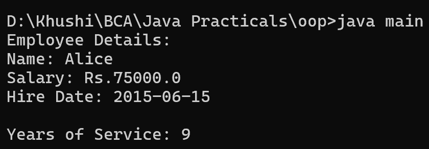

9. Write a Java program to create a class called "Employee" with a name, salary, and hire date attributes, and a method to calculate years of service.
import java.time.LocalDate;
import java.time.Period;
class main {
public static void main(String[] args) {
Employee employee = new Employee("Alice", 75000, LocalDate.of(2015, 6, 15));
System.out.println("Employee Details:");
System.out.println("Name: " + employee.getName());
System.out.println("Salary: Rs." + employee.getSalary());
System.out.println("Hire Date: " + employee.getHireDate());
System.out.println("\nYears of Service: " + employee.calculateYearsOfService());
}
}
class Employee {
private String name;
private double salary;
private LocalDate hireDate;
public Employee(String name, double salary, LocalDate hireDate) {
this.name = name;
this.salary = salary;
this.hireDate = hireDate;
}
public String getName() {
return name;
}
public double getSalary() {
return salary;
}
public LocalDate getHireDate() {
return hireDate;
}
public int calculateYearsOfService() {
LocalDate currentDate = LocalDate.now();
Period period = Period.between(hireDate, currentDate);
return period.getYears();
}
}
